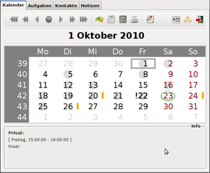

Osmo
Dieser Artikel wurde für die folgenden Ubuntu-Versionen getestet:
Ubuntu 16.04 Xenial Xerus
Zum Verständnis dieses Artikels sind folgende Seiten hilfreich:
Osmo  ist ein schlanker Personal Information Manager, der die Grafikbibliothek GTK verwendet und sich gut in GNOME, Xfce und LXDE integriert. Eigene Notizen lassen sich verschlüsseln. Kalender können im iCalendar-Format (.ics) importiert und exportiert, Aufgaben nur exportiert werden. So ist eine zumindest teilweise Synchronisation mit Programmen wie Lightning und Mobiltelefonen möglich.
ist ein schlanker Personal Information Manager, der die Grafikbibliothek GTK verwendet und sich gut in GNOME, Xfce und LXDE integriert. Eigene Notizen lassen sich verschlüsseln. Kalender können im iCalendar-Format (.ics) importiert und exportiert, Aufgaben nur exportiert werden. So ist eine zumindest teilweise Synchronisation mit Programmen wie Lightning und Mobiltelefonen möglich.
Der Kalender zeigt nicht nur Geburtstage aus dem Adressbuch an, sondern auf Wunsch auch die aktuelle Mondphase oder das jeweilige Sternzeichen. Die Oberfläche kann sehr stark konfiguriert werden, bis hin zu einer Kompaktansicht für Netbooks. Des Weiteren kann das ressourcenschonende Programm minimiert im Benachrichtungsfeld (Systray) laufen und dann Erinnerungsmeldungen ausgeben. Die Datenbank wird lokal im XML-Format gespeichert.
Alternative Programme finden sich in den Übersichtsartikeln Adressbuch, Notizen und Kalender.
Hinweis:
FTP und WebDAV wird mit Version 0.2.10 (enthalten in Ubuntu 14.04) noch nicht unterstützt.
|  |
| Osmo Kalender |
Installation¶
Folgendes Paket muss installiert werden [1]:
osmo (universe)
 mit apturl
mit apturl
Paketliste zum Kopieren:
sudo apt-get install osmo
sudo aptitude install osmo
Bedienung¶
Die Bedienung ist recht intuitiv. Der aktuelle Tag wird im Kalender umkringelt, Geburtstage haben orange Striche, Termine graue Kreise und Tage, die mit Notizen versehen sind, bekommen ein dickes schwarzes Ausrufezeichen. Aufgaben kann man mit Linksklick  auf das grüne + hinzufügen. Neue Kategorien erstellt man im Konfigurationsmenü.
auf das grüne + hinzufügen. Neue Kategorien erstellt man im Konfigurationsmenü.
Unter Kontakte kann man ein bestehendes Adressbuch importieren. Die Artikel Evolution erklären, wie man diese Daten aus den genannten, umfangreicheren PIMs exportiert. Notizen werden verschlüsselt, damit eignet sich das Programm auch als Passwortmanager (wobei man den Algorithmus und die Stärke der Chiffrierung selbst wählen darf).
Konfiguration¶
Das Aussehen des Kalenders kann stark angepasst werden. Es gibt zu jedem Reiter (dessen Position auch geändert werden kann) ein Konfigurationsmenü, das über das Schaltflächensymbol erreicht werden kann. Es lassen sich auch Komponenten unsichtbar machen, wenn man z.B. nur den Kalender haben möchte.
Autostart¶
Es ist sehr nützlich, einen Autostart für Osmo einzurichten und gleichzeitig unter "Konfiguration -> Allgemeines -> minimiert starten" zu aktivieren. Osmo fängt dann an zu blinken, wenn Notizen oder Aufgaben für den aktuellen Tag vorliegen und zeigt Erinnerungen an. Ein Klick auf das Symbol öffnet den Kalender.
- Erstellt mit Inyoka
-
 2004 – 2017 ubuntuusers.de • Einige Rechte vorbehalten
2004 – 2017 ubuntuusers.de • Einige Rechte vorbehalten
Lizenz • Kontakt • Datenschutz • Impressum • Serverstatus -
Serverhousing gespendet von